Mongolsko - momentky léto 2017
Něco málo o tom, jak vypadá běžný život v Mongolsku.
V Mongolsku je téměř každé jídlo s masem. Snídaně, oběd, večeře, všechno.
Na obrázku je národní mongolské jídlo, Khuushuur, tedy placky plněná masem a podávané s kečupem.
Jednou se mě Masha ptala, co pro mě znamená bohatství a já jsem ji řekl, že bohatství je, když má člověk kečup, protože si pamatuji z dětství, že jsme ho doma permanentně neměli. Od té doby, když jsem někde s Mashou na jídle, postaví přede mě kečup a řekne “now, you are rich”.
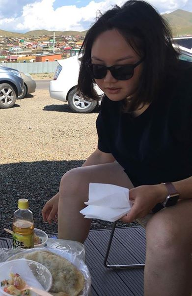
Kumis, alkoholický nápoj z kvašeného kobylího mléka, mongolský národní nápoj, který uvidíte všude.
Všichni, kdo kdy v Mongolsku byli, mě upozorňovali na to, abych si předem zjistil, kde je toaleta, než se ho napiju. A že se stačí jen srknout, že ho nemusím vypít. Já jsem ale patrně jediný člověk z Evropy, kterému chutná.
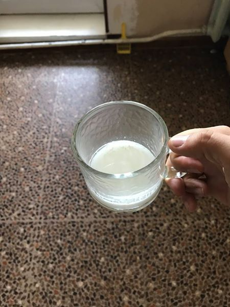
V Mongolsku není úplně jednoduché využívat autobusovou dopravu. Z UB se dostanete do spousty míst, ale problém je dostat se zpět a hlavně přejíždět mezi městy. Takže běžný postup je přijet do Mongolska, najít skupinu lidí, pokusit se najít střízlivého řidiče a procestovat Mongolsko ve skupině.
Tohle je Turtle rock v národním parku Gorkhi Terelj. Je blízko Ulánbátaru a rozhodně stojí za návštěvu.

Národní park Gorkhi Terelj ještě jednou.
Druhá možnost je využít stop. Stop je tady velice běžný, prakticky každé auto je zároveň taxi. Oproti Evropě je ale tady zvykem sdílet náklady na cestu, proto vám lidé zastaví. Řada Evropanů tohle nechápe, na netu najdete různé weby, které vám poradí, jak se placení vyhnout, z čehož třeba moje hostitelka zuří. Obzvláště “begpackeři”, tj. lidi z bohatých zemí, co se sem vydávají s minimem peněz a pak žebrají peníze na další cestu, jsou extrémně neoblíbení http://cestovani.idnes.cz/cestovatele-zebraji-asie-singapur-hongkong-thajsko-fhb-/kolem-sveta.aspx?c=A170411_172611_kolem-sveta_hig
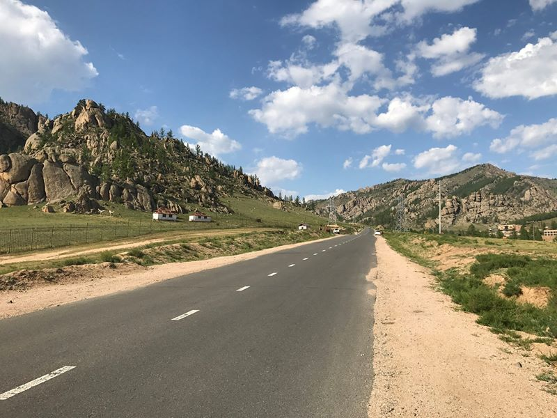
Stopování ale nemusí být zrovna bezpečný způsob kvůli alkoholu. Já jsem tady stopoval jen jednou, ale jel jsem až druhým autem, protože v tom prvním byl řidič úplně na mol.
Alkohol je tady ohromný problém. Tohle je třeba docela běžná věc, kterou v Ulánbátaru uvidíte: opilý člověk ležící uprostřed silnice a kolem něj projíždějící auta.
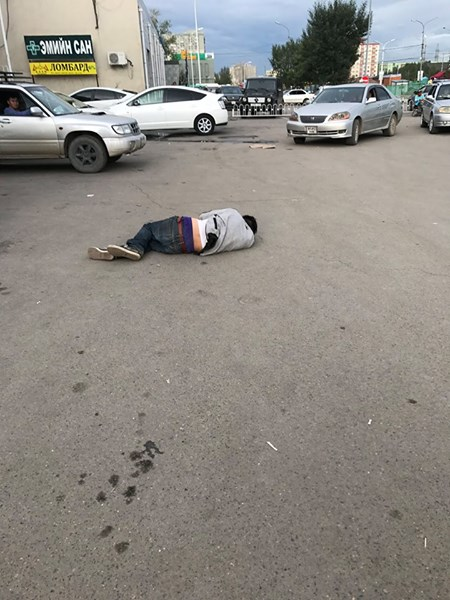
Moje učitelka spontálnosti Masha alkohol nepije, takže je ta, která rozváží kamarády do svých domovů po protančených nocích. Když se nám podaří bezpečně doručit posledního odpadlíka a čeká nás poslední cesta domů, tak konečně nastane moment, na který čekám. Podívám se na ní a řeknu: "Masha, it's time." A Masha ví. Během chvíle se rozezní Fuck You od Lily Allen, Rise Up od Andry Day a další skladby na maximální hlasitost, zatímco se řítíme nočním Ulánbátarem domů a budíme okolí.
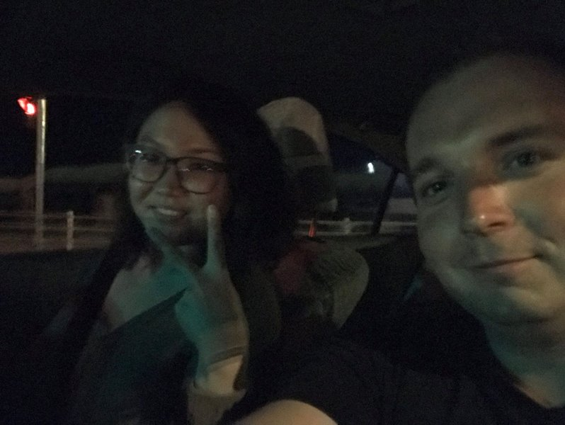
Ve všech turistických průvodcích se dočtete, že byste nikdy neměli randit s Mongolkama, protože místní muži jsou velmi hákliví na to, když vidí nějakou mongolskou ženou s Evropanem. A když už si teda tady někoho najdete, tak nikdy nechodit do nočních klubů.
Takže mě Masha seznámila se svou kamarádkou a hned jsme šli do nočního klubu.
Když jsme tam přišli, dva muži ke mně přistoupili s tím, že tam nesmím, protože nesplňuji dress code. Masha obvolala všechny možné kamarády a za deset minut mi oznámila, že se dress code pro dnešek ruší.
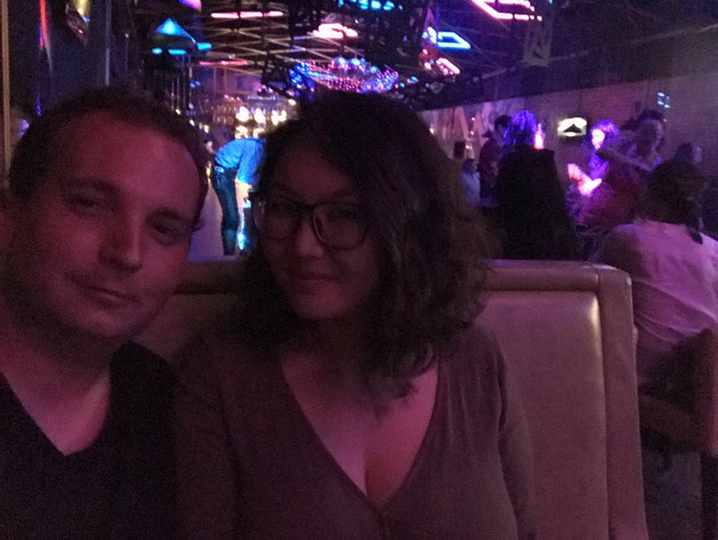
Co mě trochu v UB děsí. Narazíte tady na lidi, kteří se otevřeně hlásí k nacismu. Alespoň jednou denně narazím na auto, které je polepené hákovými kříži. U nás je za tohle vězení.
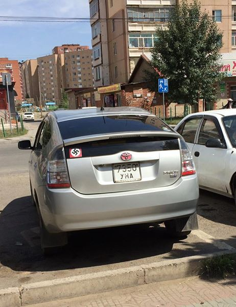
V Mongolsku téměř nejsou stromy. Většina Mongolska vypadá jako na obrázku. Půsté hory, sem tam jurta a jinak nic. Na venkově je ohromný klid. Žádný stres. Kdybych měl nějakou velkou firmu, tak sem každý rok budu na dva týdny posílat své manažery na ozdravný pobyt.
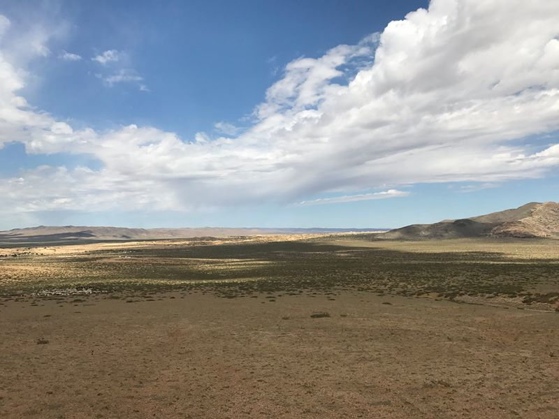
Občas ale musíte dávat pozor na silnici a čekat, než stádo divokých velbloudu přejde na druhou stranu.
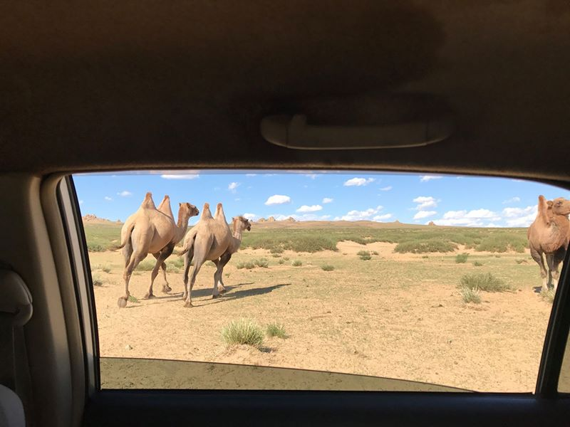
Svatba před gigantickou sochou Čingischána. Čingischán byl jedním z nejslavnějších vojevůdců a dobyvatelů na světě, větší říši dokázali vybudovat jen Britové.
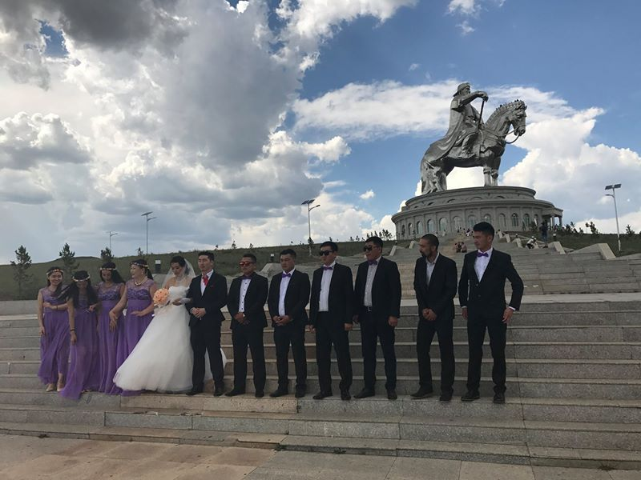
Mongolské peníze. Nejvyšší bankovka je tady v přepočtu 200 Kč a nejnižší ekvivalent českého desetníku. Pokud si chcete vybrat peníze na celý pobyt, budete mít po pár směnách “problém, kam s penězi”. Současnost ale není to nic proti kamarádovi, který zde byl před cca 17 lety a hned po příjezdu dostal pro čtyři lidí dva pytle plné peněz.
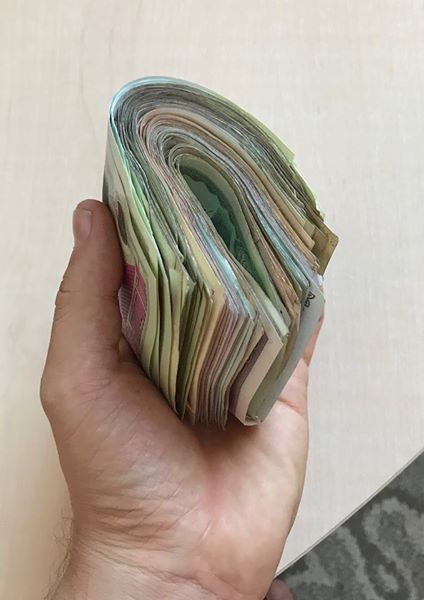